Drum synth and sequencer for the M-VAVE FM-1
Free firmware that turns the FM-1 into a deep drum synth: simple enough to make a beat in two minutes, with room to explore for months.
Elixir started as a port of the Erica Synths LXR-02 drum machine, and that's all still here. Then it kept going: 29 sound engines, a full effects chain, sequencing tools that can write and evolve parts for you, live performance controls, MIDI control of over 400 parameters and 8-channel USB audio. It brings together the best parts of my favorite drum machines and sequencers, all on a $60 synth that fits in your pocket.
Elixir is free, made by one person in my spare time. If it makes your FM-1 more fun:
Tip me on Ko-fi Send ideas or bugs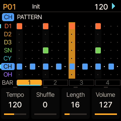
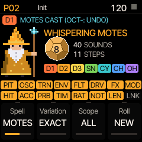
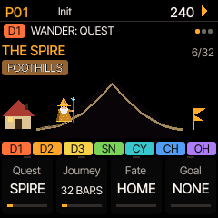
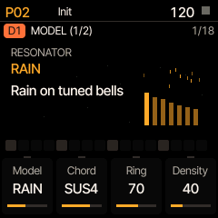
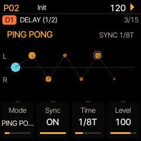
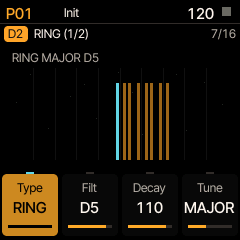
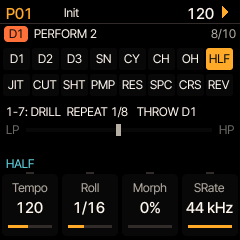
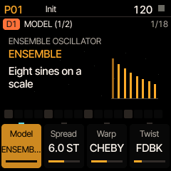
- 29sound engines on the drum tracks
- 65sound parameters a voice across 18 pages
- 18filter types on every track
- 28scales for melodies and the keys
- 16melody shapes, 13 of them arpeggios
- 400+parameters you can reach by MIDI
- 8channels of USB audio: mix and stems
- 85LXR-02 factory kits built in
Simple to start. Deep when you want it.
You don't need to learn it all at once. Everything past the basics waits until you go looking for it, and anything that changes your beat for you can be undone.
Minute one
Pick a kit, tap a beat
Turn PRESETS to choose one of the LXR-02's factory kits, pick a drum, tap the white keys and press play. The manual's quick start is nine short steps.
Week one
Make it yours
Shape a kick, add delay and reverb, lock a filter sweep to one step, give the hats a swing, and play the performance keys: rolls, stutters, tape stops.
Month one
Let it surprise you
Have a generator write the hats, roll the dice on a sound, let the pattern drift somewhere new over ten minutes, and map it all to a controller.
Everything in one place
What's in the bottle, grouped by what it's for. The manual has the details.
Drum voices
Seven tracks with the LXR-02's six voices, and many more engines to swap in.
- The LXR-02's kick and toms, snare/clap, cymbal and hats
- Rings' resonators and 11 of Plaits' engines (Mutable Instruments) on the three drum tracks
- Granular voices: CLOUD, and RAIN (grains ringing tuned bells)
- ENSEMBLE (eight stacked sines), colored NOISE and ten microsound clicks on any track
Sound shaping
Plenty of ways to bend a drum out of shape.
- 18 filter types: 303-style acid, MS-20, Moog-style ladder, combs, vowels, chords
- A master filter that can ring the whole beat in a chord
- Nine waveshapers, bitcrusher, sample-rate reducer, tilt EQ
- A frequency shifter or ring modulator on every track
- Random per hit, choke groups, one voice ducking or filtering another
Effects
Delay, reverb and an effects bus, with sends from every track.
- Delay: mono, ping-pong, tape (wobble and glitches) or granular, with a dub feedback howl
- Four reverbs: room, spring, hall and Clouds' plate
- Phaser, flanger, frequency shifter, ring mod or compressor on the bus
- Master saturation, a sidechain compressor and a master filter
Sequencing
An Elektron-style step sequencer with a few tricks of its own.
- 32 patterns of up to 64 steps, parameter locks, conditions, chance, ratchets, flams
- Each track its own length, speed and direction, for polyrhythms
- 28 scales, and a melody generator with 16 shapes: walks, motifs and 13 arpeggio orders
- 12 groove templates, songs and chained patterns
Modulation
Things that move the sound for you, in time or not.
- Two LFOs on every track; the first can reach any voice
- Four global LFOs, from 1/32 note to 256 bars, or free in Hz
- An envelope follower: let the kick pump the reverb or open a filter
- Morph between two kits, and links between tracks (when the kick hits, the hats drop)
Generative tools
Let Elixir write or evolve parts while you listen. Keep what you like; one button undoes the rest.
- Generators on any track: Euclidean rhythms, Grids, a Turing machine, cellular patterns
- One knob thins the whole beat out or fills it in
- WANDER: the pattern changes slowly over minutes, then finds its way home
Randomizing
Roll the dice on sound and steps, with a direction in mind.
- Eleven themed SPELLS: metallic rattles, stripped-back grooves, dark dub, everything in one key
- Or plain chance, from a small nudge to anything goes
- Choose which tracks and which parts may change; undo exactly; save the ones you like
Performance
The sixteen white keys turn into live effects.
- Rolls, fills, beat repeat, stutter, tape stop, half time, reverse, delay freeze, reverb throws
- RUSH turns the whole kit into a snare roll with one knob
- Transpose tracks from the keys; play any voice like a synth
- Move a knob on every track at once (Control All)
MIDI and USB audio
Plays well with a computer and a controller.
- Record over USB-C: the stereo mix plus six separate drum stems, no driver needed
- Over 400 parameters by MIDI CC or NRPN; remap any CC from the browser
- A ready-made map for 8-column controllers like the Launch Control XL, with lights
- Clock in and out, pattern changes, notes out per track
Built on the LXR-02
Elixir began as a port of the Erica Synths LXR-02's firmware, and it still is one: the sound engine, sequencer and kits come straight across, rewritten to run on the FM-1. If you know the LXR-02, you know where most things are.
- The whole engineAll six voices with their oscillators, FM, transients, filters, envelopes and LFOs, plus the original effects bus and sequencer.
- The factory kits, built inAll 85 of the LXR-02's kits, with Erica Synths' permission, and Hrtl's DLC and UNTZ packs one click away.
- Bring your ownImport .SND kits or a whole LXR-02 project (kits, patterns and songs) from the library page, and send kits back.
- Its MIDI mapThe same CCs and NRPNs as the LXR-02, so existing controller setups keep working.
- A sound browser and kit libraryAudition every kick, snare or hat from all your kits on one track, and keep 128 kits and 128 sounds beyond the project.
- Back up over USBBack up and restore projects and the kit library from the browser. No drivers.
A closer look
A few of the things that make Elixir different
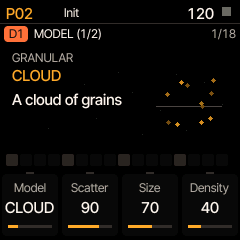
Sound engines
Swap a drum's engine
Every track can trade its LXR-02 voice for something else. On the three drum tracks that includes Mutable Instruments' Rings and Plaits (struck bells and strings, FM, chords, even speech), two granular voices and an eight-sine drone. Any track can play colored noise or tiny glitchy clicks. Every engine still goes through the track's filter, shaping, sends and modulation, so you can mix and match.
Effects
A filter that rings in key
Switch the master filter to RING and the whole beat rings through eight resonators tuned to a chord: major, minor, fifths, octaves, a pentatonic and more. The kick and snare start to sing, hats turn into shimmering tones, and sweeping the knob glides through the chord in tune. Short decays give a woody knock; long ones a drone. Spread it across the stereo field, tilt it dark or bright, and choose how much of the dry beat stays underneath.
Performance
Made for playing live
Press PERF and the sixteen white keys become effects you hold down: rolls, fills, beat repeat, delay freeze, reverb throws, tape stop and filter sweeps, and a second bank with drill, half time, cuts, pump, crush and reverse. Let go and the beat is back as it was. The knobs carry a master filter, four macros and a mixer.
Randomizing
Spells: randomizing with a sense of direction
Plain randomizing tends to give you mush. A spell is a randomizer with a goal: Poltergeist makes metallic rattles, Skeleton strips a groove back to its bones, Haunted Dub darkens everything and adds echoes. Choose which tracks to touch and whether it may change the sound, the steps or both, then cast. Don't like it? One button puts everything back exactly. Like it? Save it as a recipe.
Generative
Wander: a beat that slowly goes somewhere
Pick a mood (Elixir calls them quests) and press go. Over the next few minutes the pattern changes a little at a time: one track gets darker, another wetter, hits thin out or fill in, new figures appear that sound like they belong. It's made for long jams and ambient sets. Press one button and it walks back home; if you find somewhere you love on the way, save it as a new pattern.
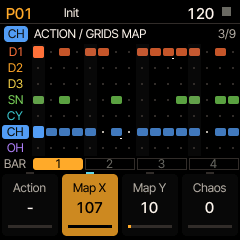
Sequencing
Parts that write themselves, if you want
Give any track a generator, such as a Euclidean rhythm, Mutable Instruments' Grids drum map or a Turing machine, and it plays a live part you can steer with the knobs. When you hear something you like, commit it to the steps. Give each track its own length, speed and direction and a simple pattern turns into polyrhythms.
For the notes, a melody generator sits beside the rhythm: random notes, a walking bass line, a short motif that develops, or one of 13 arpeggio orders. It plays in any of 28 scales (major and minor, the modes, pentatonics, blues, Hirajoshi, pelog and more), can loop a phrase it likes, and the scale keeps every tuned voice in key, from the toms to the keyboard.
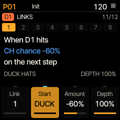
Finding your way around
Every FM-1 firmware does this a little differently, so here's how Elixir works. There are three moves, and they work the same everywhere. Pick a track with the black keys 1–7 first; the sound and sequencer pages are about that track.
1Press a button
It opens that button's section: EDIT opens the sound's model, HOME the step grid, FX the effects.
2Press it again
Most buttons hold a few sections. Each press goes to the next one, in the order below, then back to the first.
3Turn SELECT
It turns the pages, one at a time; the title shows where you are (3/18). The four knobs change the four values at the bottom of the screen.
The sound of the selected track
- EDIT
- Model → oscillator → FM → transient
- SCL
- Filter → shape (drive, bits, tilt) → insert effect
- ENV
- Amp envelope → gate → mod envelope and velocity
- LFO
- LFO 1 → LFO 2 → random per hit → cross mod and choke → sends
These four jump into one row of 18 sound pages, laid out like a synth's signal path. SELECT walks the whole row.
Patterns and sequencing
- HOME
- Step grid → patterns → load → song
- SEQ
- The track's pages (length, generator, melody, scale, groove …) → step edit
- PLAY REC
- Start and stop; record live from the keys
- SAVE
- Save → load
Tap white keys to place steps. Hold a step and turn a knob to set that value for that step only.
Playing live and the generative tools
- ARP
- Perform (the keys become effects) → spells → wander → global modulation (LFOs, macros, links)
- PRESETS
- Turn it to browse kits. On a sound page, it browses single sounds for the track
Performance effects stop when you let go of the key, and a spell or a wander can always be undone.
Mix, effects and settings
- FX
- Reverb, effects bus, delay, routing, dirt, master filter, compressor and the sends, one page after another
- GLO
- Mixer → settings (MIDI, USB audio, colors …)
- OCT−
- SHIFT: hold it and the screen lists what each key does with it
- OCT+
- COPY and OK. Hold it and turn a knob to change every track at once
The cheat sheet has every page's knobs on four pages, and the manual covers the panel in detail. In the emulator you can try all of this with the mouse.
On the FM-1's screen
Every page draws what its knobs do.
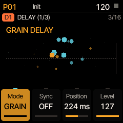
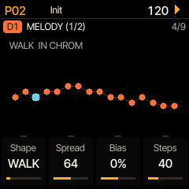
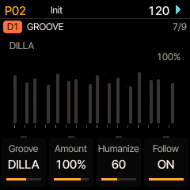
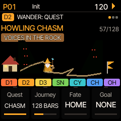
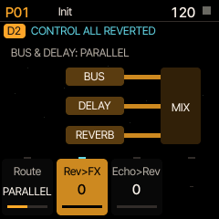
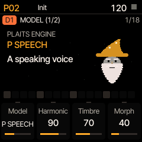
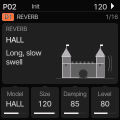
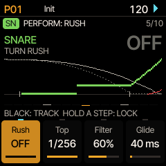
Get started
You need an M-VAVE FM-1, a USB data cable, and Chrome or Edge on a computer.
Try it
Play Elixir in your browser with the computer keyboard, the mouse or a MIDI controller. It runs the real firmware, so what you hear is what the FM-1 plays. Nothing to install. There's also a phone version (experimental).
Open the emulatorInstall it
The install page checks your FM-1, puts the official V15 firmware on first if needed, then installs Elixir. Going back to V15 is on the same page.
Install ElixirLearn it
The manual starts with a beat in two minutes, then covers every page, button and knob. The cheat sheet fits it all on four pages.
Read the manualUpdates
What each release added and fixed.
1.1November 9, 2026
- Two new LFO waves, on every LFO. SMOOTH is RANDOM without the steps: it glides on a curve from one random value to the next, so a filter or pitch wanders instead of jumping. DRIFT glides the same way, in small steps from where it is, for a slow, analog-style wander on tuning or cutoff.
- A hit that restarts the LFO starts SMOOTH and DRIFT on a new glide from where they are, with no jump. Kits sent to an LXR-02 get RANDOM in their place.
1.0.1November 9, 2026
- The DJ filter is now called the master filter, which says better what it does: the whole mix through one filter, from a plain low-pass or high-pass to ACID, MS-20 and RING. Nothing else about it has changed, and projects load as before.
1.0November 9, 2026
The biggest update yet: new sound engines, a rebuilt effects section, recording over USB, and a lot of small things that make Elixir easier to find your way around. Kits and projects from 0.25 load and sound as before, except where noted under Removed.
New sounds
- CLOUD, a granular voice for the drum tracks: a swarm of tiny sine grains around the note. Short grains crackle, long ones shimmer, scattered ones make chords. It's light on the processor, so it plays alongside the heavier Rings and Plaits engines.
- RAIN: CLOUD's grains falling on a chord of tuned bells. Sparse, it sounds like rain on a bell; dense, a bowed shimmer or a marimba roll.
- NOISE, for any track: brown, pink, white or blue noise on one knob, which can also be stepped into pitched 8-bit noise. Good for hats, shakers, washes and risers.
- Four new filters on every track: ACID (in the style of the TB-303), MS-20 low-pass and high-pass, and LADDER (Moog-style, with a bass-restoring knob). Each can be opened by the drum's envelope, for that squelch on a kick or a tom.
Effects
- The delay is now its own effect, always available after the effects bus, so you can have a phaser and echoes. Every track has its own delay send, and a routing page sets whether the bus feeds the delay, the delay feeds the bus, or they run side by side.
- Granular delay: a new delay mode that scatters the echoes into up to eight grains, each with its own pitch and position. Freeze holds the sound while the grains keep playing.
- Dub howl: a resonant band inside the delay's feedback, so pushed echoes build into a self-oscillating whistle at a pitch you choose.
- Frequency shifter on the effects bus: drums turn into gongs and bells, small shifts give an endless rising or falling phase.
- The master filter has character types: ACID, MS-20 and RING (eight resonant bands tuned to a chord, so the whole beat rings in a key).
- A master volume after everything, on CC 124.
Recording
- 8-channel USB audio. Plug into a computer and record the stereo mix plus each of the six voices on its own channel (D1, D2, D3, snare, cymbal, hats), class compliant, no driver. Any drum can be taken out of the stereo mix while you record, to process it separately.
Sequencing and modulation
- Time stretch per track (50–200% of the tempo): set one track to 99.9% and it slowly drifts against the rest and comes back around, Steve Reich style.
- A fourth global LFO, and global LFOs can now run free in Hz as well as in time with the beat.
- Envelope follower: a global LFO can follow a drum's level instead, so the kick can duck the reverb, pump the whole mix or open a filter on every hit.
- Every LFO now has the same knobs in the same places, and a track's first LFO can reach any voice.
- Twelve more scales, 28 in all: Locrian, melodic minor, Hungarian minor, double harmonic, both diminished scales, Lydian dominant, altered, In Sen, Iwato, Kumoi and Egyptian.
- Delete a pattern: hold SHIFT (OCT−) and tap it on the pattern page.
- Set every track's length at once (Control All on track length).
Wander
- Three new quests: Boiling Frog (the tempo creeps until you're somewhere else), The Canyon (delay and reverb pile up and pull the voices apart, then bring them back) and Howling Chasm (its darker twin, with a howling delay and the whole beat ringing in a low chord). Journeys can last up to 1024 bars.
MIDI and controllers
- Control All by MIDI: one button on your controller, then any knob moves that setting on every track. Tracks can be left out.
- Rolls per track and density per track by CC; load a morph kit by CC 125.
- MIDI notes out, chosen per track.
- The remote map's effect buttons latch on a tap and hold on a longer press, so one row of buttons does both. The freed numbers now control the delay and the RING filter.
Easier to use
- A new default color scheme, SAND: amber on true black, which reads better on the FM-1's screen. Bigger, shorter text on most pages.
- New pictures for the delay (echoes that bounce, drift and break up), the granular delay, the melody generator's shapes, the routing and every new engine.
- Pressing a section's button again goes to the next section; SELECT turns pages within one.
- Hold OCT− while turning any knob for fine adjustment.
- HOME's third press is LOAD: kits, morph kits, single sounds and projects in one place. A factory kit can now be the morph target.
- A simpler SHIFT menu, and the generator knob briefly shows what each generator does.
- If the processor runs out of time, the title flashes red and names what's using it, instead of just glitching. The manual explains which sound engines are heaviest and what to do.
- The MODEL knob skips Rings and Plaits engines when the two allowed are already in use, and says which drums have them.
- With morph at 100%, sound knobs edit the morph kit (new default).
Removed (to make room)
- Plaits' modal, noise, grain and particle engines. Kits that used them load on Rings' MODAL, NOISE, the LXR voice and RAIN, so they sound different.
- The track inserts PHASER, FLANGER, CHORUS, TREMOLO and AUTOPAN (the effects bus still has a phaser and flanger), and the bus's DRIVE (the master DIRT does the job). Kits that used them load with that effect off.
Fixed
- A spell (usually Concrete Drift) could leave the cymbal ringing forever as white noise, even after STOP.
- The spell's dice stayed over the description after a cast.
- Switching the delay from mono to ping-pong could smear the echoes or corrupt memory.
- Changing the delay's mode clicked; it now fades.
Under the hood
- 35 KB more memory recovered for new features.
- The two processor cores now work side by side instead of waiting on each other, so more engines and effects fit at once. The output is 1.45 ms later as a whole.
- The master filter, phaser, Rings and several Plaits engines are cheaper to run, with the same sound.
Earlier releases (0.14 to 0.25.2)
0.25.2November 3, 2026
New
- LFO destinations easier to read and find: the track LFOs' page shows the destination's full name under its group (FILTER, Frequency; MOD EG / VELO, Velocity amount), as the MODEL page shows a model, and a global LFO's Dest shows its full name over the page for a few seconds while you turn it.
- The Dest knobs turn through their destinations in groups, in the order EDIT shows the pages (the signal path), each group by name; the global LFOs' by sequencer, kit, delay, reverb, master FX, master filter and macros. The velocity's destination follows the same order.
- One name for one knob: the track LFOs' DstParam (LFO 1) and Target (LFO 2) are now Dest, as on the global LFOs.
0.25.1November 2, 2026
New
- Mute and solo from a controller's toggle buttons: CONFIG: REMOTE's new Mute/solo setting, TOGGLE, takes what the button sends as the mute (on mutes, off unmutes), so a Launch Control XL's pads in Toggle mode stay in step, and with the feedback looped back they light with the mutes. PRESS (the default, for momentary buttons) is as before: each press flips it.
- Filter reso: the master filter's resonance, on the FX bus's DIRT page (KNOB 2) and the remote's GLOBAL CC 47. At 0 the filter is as before; turned up it rings and screams as you sweep it. Saved with the project; no extra CPU.
0.25November 2, 2026
New
- ENSEMBLE, a new model on every track, after 4ms' Ensemble Oscillator: eight sines stacked up from the voice's pitch, quantized to a scale (Spread, Scale), each one warped (FOLD, CHEBY, SEGMENT) and twisted (FEEDBACK, PULSAR, CRUSH), with Balance and Detune. Through the amp EG it gives gongs, chimes, organ stabs, clusters and drones. Its MODEL page draws the eight oscillators.
- ENSEMBLE isn't limited like Rings and Plaits: each one takes about 10% of the CPU (one Rings, one Plaits and three ENSEMBLE voices play together fine).
- The AMP EG page now shows for the Plaits engines that don't make their own envelope (P VA, P WSHAPE, P FM, P GRAIN, P ADDTV, P CHORD, P SPEECH, P SWARM, P NOISE, P PARTCL), since the amp EG shapes them.
0.24.2November 2, 2026
New
- The basics on one MIDI channel: the remote channels (15 and 16 by default) now also launch patterns (program change 0–31), slot kits (CC 126) and factory kits (CC 127), so a controller already on a remote channel needs no third channel for them.
- CC 126 and CC 127 also work on the global channel (10) as CC 102 and 103 do (Global in KEYS or PAT+KIT), so the same numbers work on all three.
0.24.1November 2, 2026
New
- Elixir protects Wyrd's data. On a unit that still holds Wyrd's projects, kits or settings, Elixir asks at power-on and saves nothing until you answer: SHIFT (OCT−) keeps it all (Elixir saves nothing until the next power-on, so you can back it up), COPY (OCT+) twice erases only Wyrd's records. Elixir's own projects and kits stay.
0.24November 2, 2026
New
- Your own MIDI CC numbers: the library page has a CC map. Point each CC your controller sends at any parameter Elixir takes by CC or NRPN (search by name), or at nothing. A CC aimed at a short list (a waveform, a filter type, a model) sweeps the whole list. Save and load maps as CSV files.
- The global MIDI channel (10) launches patterns (program change 0–31), slot kits (CC 102) and factory kits (CC 103), and plays the selected track from a keyboard (its mod wheel on MACRO 1); bank select, pitch bend and other CCs do nothing there. CONFIG → MIDI CHANNELS, Global in: KEYS (the default), PAT+KIT (no notes), ALL (everything, as before) or OFF.
- The install page finds an FM-1 running Wyrd or Grimoire, and says to back up its data before installing Elixir.
Changed
- Sound CCs and CC 0 on the global channel are ignored unless Global in is ALL; the track channels are as before. Set ALL to control everything from channel 10 as on the LXR.
- The cheat sheet has two MIDI pages: the channels, launching, the sound by CC and the remote map.
- P WTABLE is gone from the MODEL list, freeing 48 KB of flash for what comes next. A kit that used it loads on P ADDTV. P CHORD is unchanged: it keeps its own waves.
Fixed
- Switching the delay from TAPE to TAPE PP while it was echoing could write past the delay's memory.
0.23November 1, 2026
New
- WANDER (ARP three times): the pattern changes slowly, over minutes, until you are somewhere else. Pick one of eleven quests, press COPY (OCT+) and listen: voices get darker, wetter, more metallic a notch at a time, the hits thin out or fill in, and on an open road the rhythm itself changes one step at a time, each change picked to sound like the track's own. SHIFT (OCT−) comes home, slowly or at once, and every pattern you passed through gets its steps back exactly.
- Destinations: set Goal to a pattern and the road walks there by the end of the Journey; set it to SONG and it travels the song's rows. KEEP makes where you are home, REST waits, Memory brings back a version you heard minutes ago, and Fate decides the road's end (home, treasure, wounded, lost or the d12's choice).
- POSTCARD (hold SHIFT (OCT−), press black key 10) saves where you are into the first empty pattern, with its voices locked as they sounded, so you can come back to it or wander towards it later.
- PERFORM: RUSH, after the snare rush in Elixir Desktop by johnnyhawk02: one knob turns the whole kit into a roll. The other drums go over to the rush track (the hats first, the kick last), it rolls on the grid, then free up to 1/256 while the high-pass opens. It follows how fast you turn, and rushes record as locks.
- PERFORM: TRANSPOSE moves chosen tracks up and down the pattern's scale live from the white keys, now, on the beat or on the bar.
- A track's Base note (SCALE page, KNOB 4), as an Elektron's track note: every note moves with it, except steps whose Note you've set on the STEP page.
- ROADS (the SONG page's third page): a song plays by its own chances, cutting between rows with the same pattern, with Surprise and a way Home.
- Long notes: a step's Length now goes to 1 BAR … 64 BARS and INF, a drone held until the track's next note.
- Ten more arp orders on MELODY's Shape: CONVERGE, DIVERGE, CON/DIV, LEAPFROG, SPIRAL, ALTERNATE, PAIRS, ROTATE, INVERT and PEDAL.
- P WTABLE and P CHORD draw their real waves on the MODEL page.
- The cheat sheet has a fourth page: Wander, Rush, Transpose, Roads.
Changed
- Step edit's pages, as on the Elektrons: STEP is Note, Length, Velocity; TRIG (was TIMING) is Chance, Condition, Shift, Flam.
- P WTABLE's knobs are named for what they do: Bank, Bright and Family, and its envelope moves Bright only (a kit using P WTABLE with Env up sounds a little different).
- The factory kits are stored packed in the firmware (the same 85 kits, bit for bit), to make room.
- MICRO's PULSAR, WAVELET and SPLINTER are taken out for room; a kit that used one plays its LXR voice.
Fixed
- An arp whose cycle doesn't divide into 256 notes (6, 7, 10 …) no longer jumps to another place in its cycle every 256 notes.
0.22October 31, 2026
Changed
- Elixir has its own identity: the FM-1 now answers FM-1_359002200 (FM-1_359, then the version) instead of FM-1_900, which Felucca and other firmwares share. Updating from 0.21 works as before, and your projects and kit library are kept.
New
- A three-page cheat sheet (PDF): keys, combinations, every page's knobs, the performance keys and the spells.
0.21October 31, 2026
New
- SPELLS → MOTION's page: VOICES. The top row of white keys picks the engines a cast may give (LXR, Rings, Plaits, MICRO), and KCK keeps D1 the LXR's kick: MICRO + KCK gives an LXR kick and MICRO on everything else.
- Sound at 100% (FREE, any spell) lets the kick and the toms go too; 99% keeps them.
Changed
- NONE is plain chance on everything the white keys let in: Sound sets how far, from a nudge to anywhere at all; Spread (was Range) how many knobs move.
- A spell that changes nothing says why: NOTHING IN SCOPE (the white keys leave none of its parts), SOUND IS OFF or PATTERN IS OFF.
0.20October 31, 2026
New
- Each pattern's Voices (the pattern page): FREE (the default) shares the voices with every FREE pattern; LOCKED keeps the pattern's own voices, whatever you change elsewhere; KIT loads a saved kit slot, as the LXR's Kit change did. A lock on the page shows which.
- Play (PATTERN or SONG) sets what PLAY plays, on the pattern page, the song's ROWS page and CONFIG → SEQUENCER.
- The song's ROWS page (SELECT): insert or delete a row with OCT+.
- Three more MICRO voices, after Curtis Roads' Microsound: PULSAR (pulses that speed up until they become a pitch), WAVELET (a few cycles of a sine in a smooth window) and SPLINTER (an impulse breaking into smaller and smaller fragments).
- Pictures: the reverb's ROOM is a hut, HALL a castle, PLATE a steel shield and SPRING a bare spring; P SPEECH is a wizard whose lips move as you turn its knobs.
- The library page can empty the kit library (installing V15 doesn't clear it), backing it up first.
Changed
- The song page's knobs: Song, Row, Pattern, Repeats (KNOB 2 moves the row).
- CONFIG → SEQUENCER's Kit change is now each pattern's Voices (KIT); projects that had it on AUTO load with their patterns on KIT.
- The pattern page shows how to copy and paste a pattern.
- Instructions on screen: the term in color, then what it does, spaced alike on every page.
- CONFIG → LOAD shows each core's load (moved from the ELIXIR page), spaced out.
- About 24 KB of flash and 1 KB of RAM freed: wavetables that were never read, and two lookup tables moved out of RAM.
0.19October 31, 2026
New
- SPELLS (ARP, after PERFORM): NONE and eleven guided randomizers for the sound and the pattern, from Poltergeist to Whispering Motes. The black keys pick the tracks, the white keys what may change (1–8 the sound, 9–16 the pattern). COPY (OCT+) rolls a twelve-sided die and casts, again rerolls from before the cast, and SHIFT (OCT−) takes it back exactly. Five pages: GRIMOIRE (spell, variation, scope, roll), CAST (sound, pattern, density, chaos), CHARACTER (each spell's own four), LIMITS (the most a spell sets for the sends, the reverb and the FX mix) and MOTION (how far the tracks' speed and direction part, from SAME to FREE, and the lengths a cast may give). Bar key 3 saves a recipe (U1–U8) into the project. D1 always stays a kick and D2 and D3 toms, and spells often give the toms a melody in the pattern's scale.
- The LXR-02's 85 factory kits are built in, with Erica Synths' permission. The kit browser (PRESETS) lists them first (F1 …), then the library, then the slots; CONFIG → BUTTONS & KITS can put the slots first. The sound browser offers the factory kits' voices too.
- Hrtl's DLC and UNTZ kit packs (16 kits each): tick them on the install page or add them on the library page. They go into the library's first empty slots, never over your own kits. The emulators include them.
- Songs: KNOB 3 (Repeats) plays a row's pattern x1, x2, x3, x4, x6, x8 or x16 times before moving on; the row playing shows which time it is.
- Pictures: each EDIT page's top shows its sound (the wave, FM, transient, envelopes, the filter's response, the shaper, inserts, LFOs, random lanes); the MODEL page a picture of the model beside a plain description; SEQ's groove, bounce, melody and scale; FX's reverb room, delay echoes, FX bus, DIRT and the master compressor.
- PERF RESET: SHIFT (OCT−) + HOME turns every performance effect off at once.
- KEYS stays on as you change pages, so you can play while turning knobs; the header shows KEYS.
- The FX pages end with the voices' FX and reverb sends.
- Editing with morph on moves the morph target too, so an edit is heard at any morph amount (CONFIG → MORPH → Edits; KIT ONLY for the LXR's way).
- DENSITY's VARY redraws the order steps drop and ghosts land each time round; OCT+ on DENSITY commits it into the pattern (again: undo).
Changed
- The sound pages run in a synth's order: MODEL, oscillator, FM, transient, filter, shape, insert FX, the envelopes, then the modulation. SELECT steps through them all; EDIT, ENV, SCL and LFO jump to their sections. A section of several pages shows its page in the title.
- SEQ opens the track's pages (TRACK, generator, action, groove, bounce, melody, scale), SEQ again step edit. ARP cycles PERFORM → SPELLS → GLOBAL MOD (the global LFOs, macros and links).
- LFO 1 and LFO 2 share a layout. The track's MIX pages are gone (the mixer, CONFIG and TRACK have them); the sample rate is on SHAPE. CONFIG has a new last page, ELIXIR: the version and each core's load.
- Knob cards in real units: filter Hz and Q, envelope times in ms, LFO rates in Hz, delay time in ms and so on.
- On a model's own sound, the FM, TRANSIENT and AMP EG pages it doesn't use are hidden, and OSC keeps only COARSE and FINE live.
- The FX bus is always stereo (no Output knob).
- Phone emulator: a smaller screen with PRESET, ALGO and SELECT beside it, larger knobs under the parameters they turn (or drag a parameter on the screen), square pads and a volume slider. Both emulators draw the screen smooth at your display's resolution.
- A new unit no longer fills its kit slots with factory kits (LOAD → FACTORY, ALL > SLOTS still does).
Fixed
- After a model change the knob cards kept the last model's names and values.
- MODEL on LXR showed Rings' knobs, which do nothing there; the MODEL page lit GLO instead of EDIT.
- Phone emulator: tapping buttons no longer zooms the page.
0.18October 30, 2026
New
- P CHORD shows its chord by name (OCT, 5, sus4, m, m7, m9, m11, 69, M9, M7, M) on its first MODEL knob, now called Chord; Timbre and Morph are named Invert and Wave.
- TRK LFO 2 (LFO, after LFO MODE; from 0.19 LFO 2): a second LFO on every track, with LFO 1's waves, sync, retrigger, offset and modes, on any of the track's own parameters. On the same target as LFO 1 it adds to it.
- INSERT (SCL, after SHAPE): an effect on every track before its pan and sends: PHASER, FLANGER, CHORUS, TREMOLO, AUTOPAN, SHIFTER (a frequency shifter with feedback) or RING, with an AMOUNT and two knobs named for the type.
- The LFO's and velocity's targets go on past the LXR's to Elixir's own: the sends, tilt, bits, the random amounts, cross mod, the MODEL knobs, and the reverb, delay and dirt settings.
- GROOVE (ARP, after SCALE): twelve timing and velocity templates per pattern (MPC-style swings, LAZY, DILLA, 2-STEP, DUB, PUSH, TECHNO, BROKEN) with an amount, HUMANIZE, and which tracks follow.
- Seven more filter types on every track: LP4 (a ladder low-pass), COMB+ and COMB− (tuned combs that follow the note), ALLPASS (a phaser's notches), VOWEL (formants from A to U), DUB BP (a driven band-pass) and CHORD (a root, fifth and octave rung out of any sound).
Changed
- The 64 kit slots are stored more compactly in memory, which frees about 6 KB for the next features (more LFOs, track inserts). Kits, projects and the library are unchanged, and kits sound the same.
0.17October 28, 2026
New
- MICRO: ten microsound voices for any track, after GLITCH: CLICK, TRAIN, CRUNCH, BITS, BURST, SNAP, GRAIN, DUST, POP and CHIRP, each with Length, Color, Jitter, Reverse and Tension (the track's MODEL page).
Fixed
- Holding SHIFT (OCT−) and COPY (OCT+) together for a few seconds (to clear a selection, say) sent the FM-1 to its UBOOT mode, which looked as if it had switched off. UBOOT now needs both keys held from power-on.
- Step edits (chance, velocity, note, condition, timing, ratchets, locks) on a track that a generator plays did nothing after COMMIT; they now reach what plays.
0.16October 28, 2026
New
- A scale per pattern (17, from major and minor to pentatonics, Hirajoshi and pelog) that the tracks you choose follow: their notes, random pitch, KEYS and MIDI in stay in key.
- Note lengths per step (1/32 to 1/2, and TIE) with a GATE per voice; MIDI out sends real note-offs.
- A melody generator after Marbles: random, walk, arpeggios and motifs over the scale, with spread, bias, steps and déjà vu loops, beside any rhythm generator. COMMIT writes the notes in.
- DENSITY on PERF: one knob thins the whole pattern, weakest steps first, or builds it up with chances, ghost notes and ratchets. Any tracks can be left out.
- A third global LFO, and new destinations: density, transpose, the melody, the delay, the reverb sends and the macros.
- A tape delay: TAPE and TAPE PP with wow, saturation and feedback past 100%, note-value sync, glitches (stutter, reverse, skip, half speed), pitch-shifted repeats, and the echoes into the reverb (THROW REV throws them too).
- PLATE, Mutable Instruments Clouds' reverb, as a fourth reverb model.
- Dirt: four more shapes per voice (FUZZ, TAPE, SINE FOLD, BITE), a drive before the FX bus, and a master DIRT (tape, tube, fuzz, diode, fold).
- HYRULE, a color theme: deep forest green, parchment text, Triforce gold values and a blue for what's active (CONFIG → DEVICE → Colors).
- DENSITY on the remote: its amount on a knob, and a row of buttons to leave tracks out of it (or put them all back).
- A master compressor (FX → MASTER COMP): threshold, ratio, attack, release, makeup and mix, with a sidechain from the mix or any one track. Sidechained to the kick, it ducks everything else and leaves the kick's own punch alone.
- STUTTER (PERF → PERFORM: STUTTER): the master cut into slices and repeated in time, from 1/8 to 1/64, with shrinking rolls, pitch drops and rises, and reversed repeats. A chance per beat, OCT+ held, or a global LFO sets it off.
Changed
- The reverb and the delay's echoes now run while the first core waits for the second, so the effects cost less at the busiest moments.
- ARP's generator pages: MELODY comes after ACTION and SCALE after TRACK. PERF has a DENSITY page after MORE, and two pages for LFO 3. The FX bus has three more pages (DELAY: DUB, DELAY: SEND, DIRT).
- CONFIG → LOAD shows how deep the stacks have gone.
- The FX pages come in order: REVERB first, then the FX bus and the selected effect's pages together (the two DELAY pages only when the bus is a DELAY), then DIRT.
- The remote map is on two channels: TRACKS (15 by default) for each track's knobs, mutes and solos, and GLOBAL (16) for the performance, the effects and the rest. No number is used twice on a channel, so mute and solo no longer share a CC with a knob. Buttons work as CCs or notes, and their lights answer the way they were sent. Settings from 0.15 move to the new defaults. The new map is in the manual (§15).
- With the delay's SYNC on, each detent of TIME moves to the next note value.
Fixed
- The site said two global LFOs; there are three.
0.15October 27, 2026
New
- Plaits' sixteen original engines (virtual analog, waveshaping, FM, grain, additive, wavetable, chords, speech, swarm, noise, particles, string, modal, bass drum, snare, hi-hat) as models on D1–D3, with Harmonic, Timbre, Morph, Color (a low-pass gate), Aux and Env. Experimental, as the Rings models are.
- The FM-1's second core renders the three drum voices. The LXR-02's kits use about 27% of the first core, down from about 45%. A unit whose second core misbehaves falls back to one core on its own.
- Up to two models play at once (one on a unit running one core); a third plays as the LXR voice and its MODEL page says so.
- CONFIG → LOAD: the load by part (voices, mixer, FX bus, reverb, sequencer) and the state of both cores.
Fixed
- Morphing, or a global LFO on morph, no longer overloads the processor: the kit now changes over a few blocks instead of all at once.
- The second core no longer switches off the first time the SPEECH engine plays.
- The LOAD page could show impossible numbers (over 1000%) while morphing.
0.14.1October 26, 2026
Changed
- LFO MODE comes right after the LFO's two pages instead of last among the sound pages.
0.14October 26, 2026
New
- The first release as Elixir: a new title screen and this site, with the install steps on their own page, the manual as a page and the emulator.
- The install and library pages check what your FM-1 runs before they write anything.